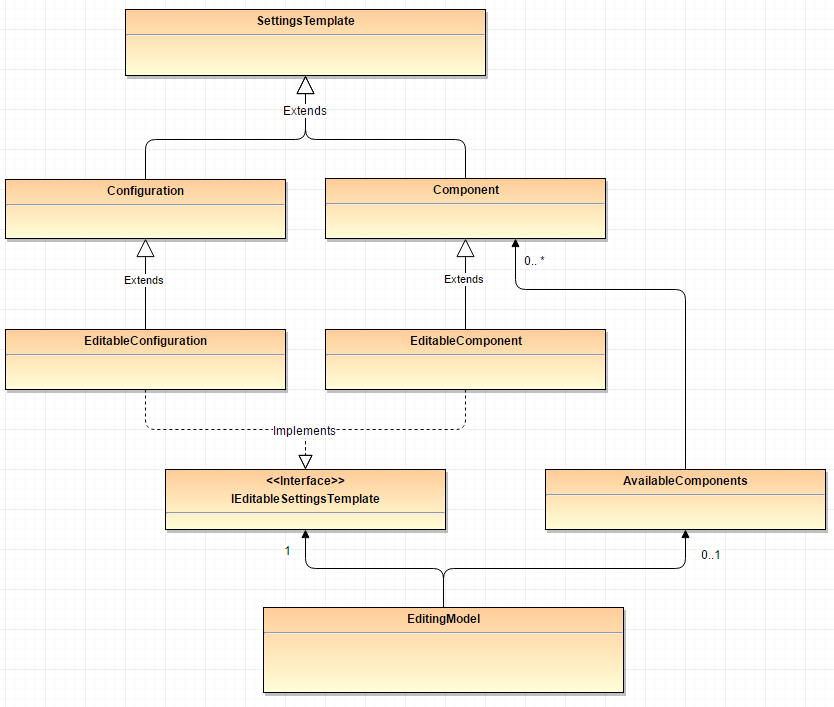

Configuration and Component Architecture
Going forward, we intend to streamline the interactions between the GUI and the Blockserver regarding configurations and components, particularly making a clearer distinction between reading and editing a configuration, as well as reworking the underlying class architecture in the GUI.
GUI Class Architecture
We propose the following changes:
Currently, both components and configurations are instances of
Configuration. Create aComponent-class, which along withConfigurationinherits from a common abstract superclass.Make
EditableConfigurationinherit fromConfiguration, simply adding setters for the elements contained in the config. Create a newConfigEditingModelthat holds the configuration and handles all editing logic.
UML of the proposed new architecture:

Blockserver Interactions
We distinguish between the following two types of interaction:
Use Case 1: Reading a configuration
For example when switching to a different active configuration, or displaying config information on the dataweb. What we read from the Blockserver:
One PV containing a configuration in it’s entirety, i.e. all elements(iocs, blocks, groups …) native to the configuration as well as ones imported from components. There currently are PVs holding this information. No changes required.
Use case 2: Editing a configuration
What we read/write to the Blockserver:
The configuration to edit including only its native elements plus the names of added components. This is the current write behaviour. We propose to add a read PV with the same information to unify the data formats in this interaction.
Additionally, read the full information of all components on the instrument. This is currently stored in the
:ALL_COMPONENT_DETAILSPV.
The new ConfigEditingModel (see above) is then responsible for matching this information up as needed.
Required changes: Add “native-only” config PVs to read from when editing configurations.